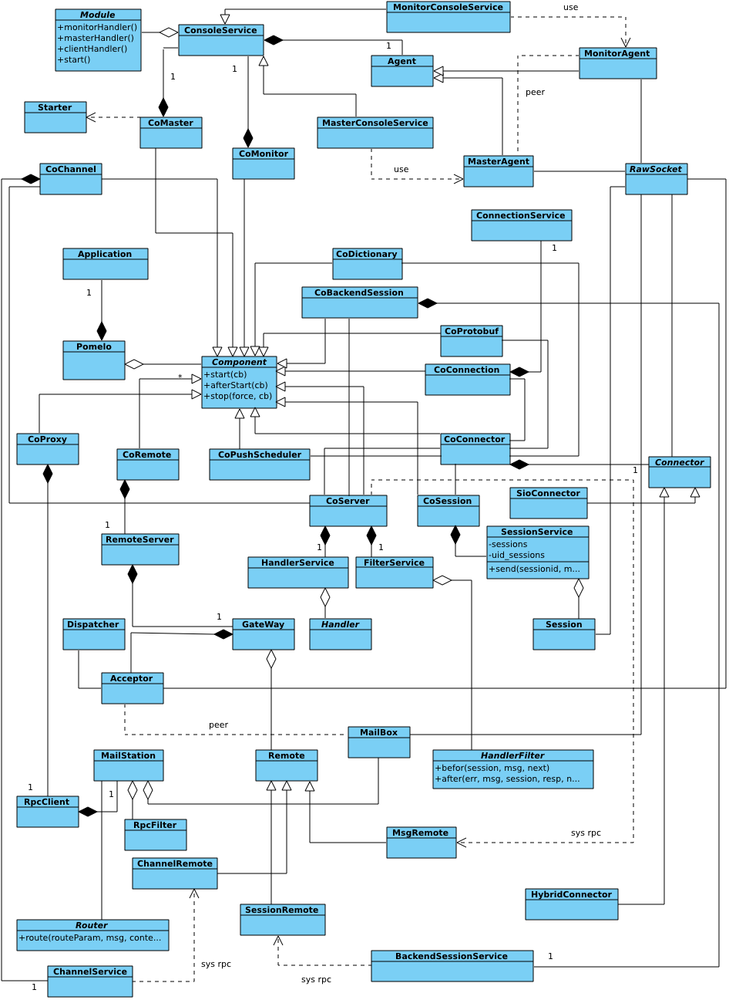

下面将呈现pomelo框架中，较为核心的非正规的类关系图,先来看一下对类图的一些说明:
由于javascript中实际上没有类的概念，有的只是一个pseudo-class的概念，因此这个类关系图中的类并不是与实际的pomelo框架中所定义使用的pseudo-class一一对应。比如，HandlerFilter，在我们这个类图中，它是一个抽象类，是所有HandlerFilter的基类。而在pomelo框架中，往往只是定义有after和before方法的类即可，而不用关心其所继承的抽象类。
在类图中，所有的组件，我们都冠以Co进行命名，以表示其是一个组件。
在类图中，定义了一个RawSocket，是把其作为了对通信层socket的一个抽象。在实际应用中，可能是WebSocket，TCP的socket或者socket.io等等。所有与RawSocket相关的类，都是表示这个类在实际应用中会直接参与通信，无论是与客户端通信，还是与其他的服务器通过rpc进行通信。
下面是我们的类图：

下面对类图进行一些简要的分析:
整个框架的核心为两个类Pomelo和Application,Application实例由Pomelo创建。Pomelo实际上由一系列的组件以及一个全局的上下文Application组成。
所有的以Co开头的都是相应的组件，他们都是抽象类Component的子类，每一个组件都完成其相应的功能,不同的服务器将加载不同的组件。这个类图里面的组件都是pomelo内建的组件，它们是为了完成pomelo的核心功能不可获缺的组件，用户可以通过定义自己的组件对pomelo进行扩展。
为了更好地展示pomelo中使用的各个类之间的关系，这个类图中展示的相关类，不仅仅是pomelo这一个项目中定义的类，还包括pomelo-admin和pomelo-rpc中的相关类。
从类图中可以看出，与通信相关的类有MasterAgent，MonitorAgent；MailBox，Acceptor以及connector。实际上，MasterAgent与MonitorAgent是对等的，MasterAgent充当”服务端“，MonitorAgent充当“客户端”，MasterAgent会监听master配置的port，MonitorAgent会发起连接，它们之间的通信完成master服务器对应用服务群的监控和管理。MailBox和Acceptor的关系也与此类似，只不过它们之间的通信完成了框架的rpc调用。connector是用来接受客户端连接的，因此connector会监听clientPort。